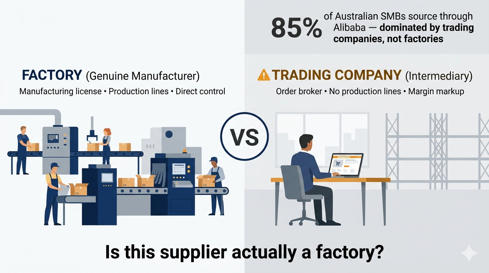

WAG Content Pack — AV Equipment Factory Verification
Generated: 2026-04-01 | Target: AV integrators / Pro audio / Stage lighting / Church AV Australia
LinkedIn Post
Before you buy your next batch of pro audio gear from China, verify three things: factory, not trading company.
Step 1 -- Check the business license on gsxt.gov.cn
Look for "manufacturing" or "production" in the business scope. Trading companies show "wholesale" or "trade" -- not a factory.
Step 2 -- Request a live video of production during working hours
Polished websites and sample rooms can be rented. Live footage of active production lines cannot be faked.
Step 3 -- Verify certifications directly with the issuing body
Accepting certificate files is how trading companies win trust. Call or email the certification body to confirm validity.
For those in AV, events, or stage production: what's your supplier verification process?
First Comment: In our experience working with Australian brands across AV, lighting, and automotive -- Step 2 is where most companies cut corners. Has a supplier ever failed one of these checks for you?

X / Twitter Thread
Post in order: Tweet 1 → Poll (reply to Tweet 1) → Link (reply to Tweet 1)
Tweet 1 (Main Hook — 276 chars)
Wrong. Most Aussie AV companies think Alibaba Verified means the supplier is real. Here's the thing -- the badge means nothing.
#AustraliaBusiness #ChinaSourcing
Tweet 2 (Poll — reply to Tweet 1)
"How do you verify Chinese factories before placing an order?
- Alibaba Verified badge
- Third-party audit report
- I visit in person
- Cross my fingers"
Tweet 3 (Link — reply to Tweet 1)
We help Australian AV integrators see the actual factory before signing anything -- no deposit risk, no trading company middleman.
winningadventure.com.au
Facebook Post
Found a supplier with professional photos and fluent English? Before you send that deposit, check these 5 things:
1. The actual business license (not just a photo)
2. Live video of production during working hours
3. References from other Australian buyers
4. Certification verified directly with issuing body
5. A factory visit -- yes, actually going there
The difference between a smooth order and a nightmare? One of these steps.
Has a supplier ever failed one of these checks for you? Share your experience below.